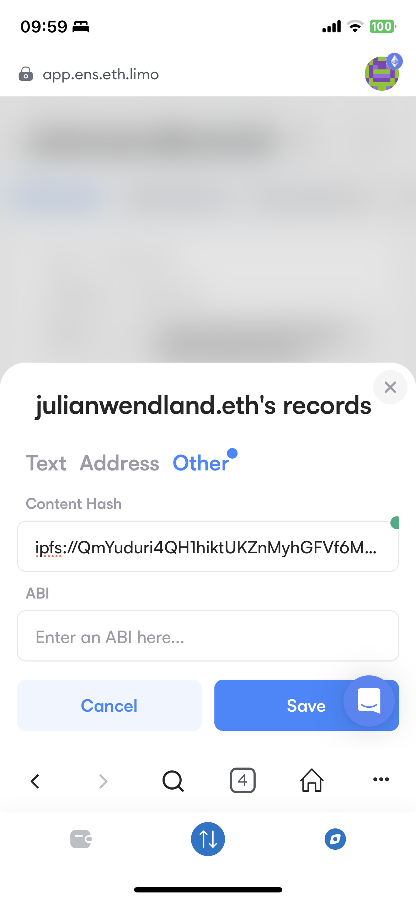
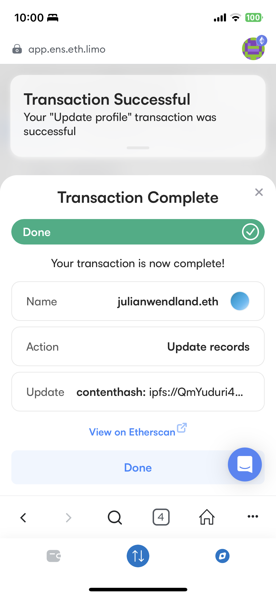

Hash based addressing instead of location based addressing with the worlds first Inter Planetary File System IPFS
curl -O https://dist.ipfs.tech/kubo/v0.20.0/kubo_v0.20.0_darwin-amd64.tar.gz
tar -xvzf kubo_v0.20.0_darwin-amd64.tar.gz
cd kubo
sudo bash install.shipfs daemon
Initializing daemon...
Kubo version: 0.20.0
Repo version: 13
System version: amd64/darwin
Golang version: go1.19.8
Error: no IPFS repo found in /Users/jw/.ipfs.
please run: 'ipfs init'ipfs init
generating ED25519 keypair...done
peer identity: 12D3KooWBcpXDYJbBx1bR4f3AfD4EahzVpcMLuM9fKnPmX3het4X
initializing IPFS node at /Users/jw/.ipfs➜ julianwe.github.io git:(main) ✗ ipfs add -r .
added QmPwPK4gEqFn53HYweZ5L1Eue8PCbnz1kK5QQjFqSQZQ1q julianwe.github.io/Dockerfile
added QmSUXhJTSC7bAiDyLdXW4MgSjAjuYThYok2RFyH4FygWbb julianwe.github.io/about.html
added QmWyGFoveLsUHYkmKrJmaYr19izmKKs5shCR6BX8rb62JL julianwe.github.io/ansible.cfg
added QmUPAjQUjjM9JWS6J65jCEAbfEoc34YdXD8UD6G7sss8T9 julianwe.github.io/atom.xml
added QmPkJ5uVc3wnNYFDx61MYrxtXbFRtJLYsDG9TKEVz5PZFD julianwe.github.io/contact.html
added QmR1xjms47sxxAirEusRgPPndMZVJTu6pmwydqCmUnLdr9 julianwe.github.io/css/about.css
added QmP521HtUVxSUewyk4quwtdCeouU2duPKxs8pcD18TsHCr julianwe.github.io/css/cards.css
added QmcTwhuZuENYHNRFo9ksbxT3bzCsZkGYbpcyHVR3F2ZnSC julianwe.github.io/css/css.css
added QmcjDKBhX3PmzWZ9zHpttRmV21Q8HtqNhgV7PiBCvFKwjF julianwe.github.io/css/highlight.min.css
added QmY9b1gpLRSAZfpssg9WSb13p5JQkEMqr8Jn6tUwhUw3iJ julianwe.github.io/css/icons.css
added QmRPe3jHy4Kf4yfGjNJwyAEdQ1EkKCSeF44JXh2iU4XNxr julianwe.github.io/css/kacheln.css
added QmYLKDZKfEDRKEwjRPoC3bUTA2B3LL2BZZZnRxfKUaMSdc julianwe.github.io/css/light.scss
added QmfCBv14BCNoHtyH6zMq6RdFmvaFnn4Min3U1PejRoWD6j julianwe.github.io/css/login.css
added QmdKeXGwTHPUoWSEwUsSYM5RPYJW51rw5maMGbpdtn3jRh julianwe.github.io/css/markdownOS.css
added QmbmetDxc3xxDJqZcPJ3gx7bRb6g7zx2SJCF1BdpJQpFCi julianwe.github.io/css/menu.css
added QmQFBqGsxYoUAjZcbon4oJVkrkL2wFPVAA6GTmXocz6Dgr julianwe.github.io/css/purge.css
added QmSF8TAoxe155RhV5KNSKmsc38GeA31DyJjp8NhuKVEnbP julianwe.github.io/css/w3.css
added QmZfg9saVxY6vwuSVwhxyv355G3t9TUzkwo4obNnrEThkM julianwe.github.io/github.jpg
added QmQonhUj3ZbrtSmYgNcBXmY8p8cdVE6dNoobS1eWdrT541 julianwe.github.io/images/background.jpg
added QmSR44XHr6JTy7Buf36TiU2jFsJBAWCDaB3CdTKpKCXxaG julianwe.github.io/images/defilego.jpg
added QmeMtQw97czTWb42ThscKQwkyg17cvrKz4SKCdDEiYRCP8 julianwe.github.io/images/git.jpg
added QmSABQNfBZGsou269RQT5Bx249SKWrQw3QrexmGcvPiDEt julianwe.github.io/images/me.jpg
added QmPbwjVQNz2yizfwAJrwXYJg5ek41KonPMz4VtVt5JXvDJ julianwe.github.io/index.html
added QmbSP3jsua4rd8zTVQ4AacTUZc3qdvViggpA36eyVLwDKH julianwe.github.io/js/about.js
added QmSQBW3QrPxmq9B46voNriLvxzr1QVQshNPMZttKfuwbkz julianwe.github.io/js/js.js
added QmTNseNTqxr77h4k9QyAVp514B43on6TR39XuoKJmtiyvr julianwe.github.io/js/light.js
added QmURyMvfH5T7K3xfrF4hymC56DzSLGXFKT6nzhrpPMnkfM julianwe.github.io/js/menu.js
added QmVLTtmJZpL5Tji6DUfucSf4DUk4QZGMWBJ6CSdoY5tsn8 julianwe.github.io/js/readingTime.js
added QmZDA9aRK4wxegcs93sFm5zafP2C4Pt2HbWfoPQk14QZ53 julianwe.github.io/js/search.js
added QmWHrtPBhZu5aus9Ni8VvgJr5jErAKvpwigLsUVce6s4UN julianwe.github.io/lib/jquery/jquery.min.js
added QmbFMke1KXqnYyBBWxB74N4c5SBnJMVAiMNRcGu6x1AwQH julianwe.github.io/lib/justified-gallery/css/justifiedGallery.min.css
added QmbDsvemWctRqRZC2gFL5ZimkCAzk66LQ84HvoccNe2R6m julianwe.github.io/lib/justified-gallery/js/jquery.justifiedGallery.min.js
added QmaUafHdjFAPSuiGx7jEYcXXGEWzNMzx9yLhz4dJsmLpXc julianwe.github.io/menu.html
added QmR7KpQvwTU7t2HvnRj2yacouCQLEWBUeGjDTwd1kJTZyv julianwe.github.io/prism.css
added QmemwBJf17PbfHTNDZQP4i1tgJdk53ePouMVnYZWhJAFfE julianwe.github.io/prism.js
added QmP7fMUCJsitDxNZVTJzvpqxwLV92PGiQQqJf7pFv2YLPo julianwe.github.io/projects/ERC-20/ERC-20.html
added QmXMEWxaiFwDm9xqFsxCD9Qv4cjri75pTGjudbrjCvWutx julianwe.github.io/projects/ERC-20/MyCustomToken.sol
added QmZ6661nyvUjyXkWpjP2zkUCaX6gCioc75SmG8UvTTunct julianwe.github.io/projects/ERC-20/README.md
added QmP6GeyKevoQAm7vaUWRaYixedoywgAii3Ai3urVykegHa julianwe.github.io/projects/ERC-20/images/ERC-20-Token.jpg
added Qmenhh8dACPeW76tUb5X1QhKZah5gr3J1q2dvpzjaRnLpV julianwe.github.io/projects/ERC-20/images/erc-20.jpg
added QmUt5Myb5n6Kw56oZp8pBQbXeRAa8eEjMoZD5RuUF4JYNc julianwe.github.io/projects/ERC-20/images/erc20.jpg
added QmeXCsy4MBF75MrsSNfQu4iDziyBeaJaEGwEQc7DV71Kpi julianwe.github.io/projects/MultiSigEthereumWallet/MultiSigEthereumWallet.html
added QmbR4ugaZsWwSXz8iBLxBfy84J6RGeGmCFCyFUXG1uhDtE julianwe.github.io/projects/MultiSigEthereumWallet/MultiSigWallet.sol
added QmQ8s9iNvzfHxWuVPtnrBwR591cmGjgqaYeEGt158HAjTr julianwe.github.io/projects/MultiSigEthereumWallet/README.md
added QmWWLhy2K4qPJbW4fzrmyuK19r2icZ6Bvoczxw7zbeZDQw julianwe.github.io/projects/MultiSigEthereumWallet/images/ApproveSpendingWalletFunds.jpg
added QmSu1G9u2W7bFxvAcaup7NhWC3qCADiYKgMbTegePqqoQu julianwe.github.io/projects/MultiSigEthereumWallet/images/DeployMultiSigWallet.png
added QmSgyLdhMGrsUoEKY3Moog6ZDooJobARoUHYw1QCa8gGE2 julianwe.github.io/projects/MultiSigEthereumWallet/images/msw.jpg
added QmRedAo81zKZMmgXgshtpWZJoJm54pdsbFJ1DFZo3WoPeR julianwe.github.io/projects/MultiSigEthereumWallet/images/multisigwallet.jpg
added QmXsRpA71CYJheV4U43UNZea474YeDRGNK6QPQQ883pmze julianwe.github.io/projects/SmartContractTutorial/README.md
added QmXUDgUQ2zP874zrqM6ifrZLVqdy5Wsv4bwNhSsU9tedba julianwe.github.io/projects/SmartContractTutorial/SmartContractTutorial.html
added QmSPtspbh8JiyW4TrwaPeVAkoC39oeKcxihaQWo1xr4U5s julianwe.github.io/projects/SmartContractTutorial/VotingContract.sol
added QmbW7Eg8CWaqWq2vQjv6mhunA8FWefegZnLpihstLLFWRq julianwe.github.io/projects/SmartContractTutorial/images/DeployVotingContract.jpg
added QmbVy3mSQJQE2YNxJBpMENKBXQiCXmu6DtLc992gB9siwz julianwe.github.io/projects/SmartContractTutorial/images/InteractWithSmartContract.jpg
added Qmb473LKqKErdJ49x7Evf3huXmBYetFN5eTuhiYkDjVggf julianwe.github.io/projects/SmartContractTutorial/images/SolidityContract.jpg
added QmeAagmDKqsq7fmPKRpR6hGNoStona6ZFUyjWb2JPELDCG julianwe.github.io/projects/SmartContractTutorial/images/sol.jpg
added QmY8DkgEhJABmdenqzHrp7cB9n9Pa6KrbhJTDuxf3DhrgK julianwe.github.io/projects/akash/README.md
added QmZhKHJCHZWnvH4CFZjZVAok9rvgYhke8n8o3ekRGtktEn julianwe.github.io/projects/akash/akash.html
added QmNamuDmH3dFbDMcphoMPb1WR7tvofH3FKa9aw3vDSyZnX julianwe.github.io/projects/akash/deploy.yml
added QmXaVEGboArhWypcruHhDwAetitcpuESifhWBh4PZzDppx julianwe.github.io/projects/akash/deploy_web.yml
added QmTnxW6kHavhS4srHEnEUegVeaNhq5Zzu6NguhTPeVuiZY julianwe.github.io/projects/akash/deploy_webapp.yml
added Qmc33G9ucbKxQvKyuvxC8zgv7usquwjsqiQBcGFSwUy72n julianwe.github.io/projects/akash/deployment.yml
added QmZjxmPSrHw2zFN8HmDTY99SBT1C9meMchuj1bb43Tsway julianwe.github.io/projects/akash/genesis.json
added QmXGggCXxDXoZNGmDdxu8ygpZTETuWjgdJdtTmXtQzowSg julianwe.github.io/projects/akash/images/akash.jpg
added QmR63fuHf3kTX788rRhXKLdmQpuWHf8uu21gWWsZK3ECo1 julianwe.github.io/projects/akash/images/akt.jpg
added QmSf7HgyskmukY5Z3CraqgejhPGBZJZeBqaXcA2oQcbA9e julianwe.github.io/projects/ansible/README.md
added QmPmoqcPGdJnzvuETiKRxoEM7XVtxmYR6M14iahZ61poJC julianwe.github.io/projects/ansible/ansible.cfg
added QmZexHWUWfD7gdrZnt4TBRiuKxJuJpw9HLxefveC6vL8aQ julianwe.github.io/projects/ansible/ansible.html
added QmeSnLu4X2FJ3ufFbZqSXgca47soJXyTbt8RS1SfjjE5eK julianwe.github.io/projects/ansible/images/ansible.jpg
added QmNvEPrSARSHNKrE6fC4sfJTGtHiwXoVvMMxwgWemxcyfu julianwe.github.io/projects/ansible/playbook.yml
added QmQBWfYJUfd61CJiPjV7gnGSCoXdQevU4J7iovDsiD6iXF julianwe.github.io/projects/ansible/project.j2
added QmeDWZJLyC4YQJHurp2Lry1C59nuYxhceKvd3aRU6coj1r julianwe.github.io/projects/ansible/projects.j2
added QmbrskWfqLoZx8dTWR95zqEasedPcuyJxWrAgd5ZzuMZSB julianwe.github.io/projects/ansible/projects_template copy.j2
added QmNZ5YSkDJ5kMBhpPy7B8xPbVe3TyfqEHgUDZQx7T2HEws julianwe.github.io/projects/ansible/projects_template.j2
added QmNmRe1f68AcaBvsWbKg8MKoqLxQdZpz9upqFq88F7H3U7 julianwe.github.io/projects/brave/README.md
added QmVhbqPNvGuX8A5LPBg9qm8K3TrK2ecizVa7qAvif8pSSQ julianwe.github.io/projects/brave/brave-rewards-verification.txt
added QmXfA3dL8hLtCk56QBDp7sqhQAppk3pfpLDX2Anhn3aPyv julianwe.github.io/projects/brave/brave.html
added QmVoq8RcdWzo9tW4FJ5iXkVt3qgoiL4X1Zpm2uc2TBHpXd julianwe.github.io/projects/brave/images/Brave.svg
added QmbtaBfRCxhLdc48LzmAHn2q1fknYeAoGXnFTatDDqgR7G julianwe.github.io/projects/brave/images/bat.jpg
added QmZUfPZiMg54nZUkkhFWTnbRSA3VNimUhPkZ9hNFdeHzTU julianwe.github.io/projects/brave/images/brave-rewards.jpg
added QmZRuNNxxAD5JeDz9RF69DsrcLDhcUrV2wgcixDt3wWNz4 julianwe.github.io/projects/brave/images/brave1.jpg
added QmbGDXyU5DqFFkubJzXhgPV8F36aJeVajDi19D2iLAZgi6 julianwe.github.io/projects/brave/images/brave2.jpg
added QmT1VVZSJLfaeg3PNnSHv6karoSEgCxvJr9cS9pceqC3oe julianwe.github.io/projects/chainlink/README.md
added QmbMfndiYv7cBkBgnZcZQZUV8h2rs3HoUGu14HfaNQSZi4 julianwe.github.io/projects/chainlink/chainlink.html
added QmefL9637pKWDgjQVfwgjVav4r7ynyXfYYMWAVi9ohsFwj julianwe.github.io/projects/chainlink/images/ChainLink_Operator.jpg
added Qmdpg2vX6fadHqhUKDhvDqASEwdZRtYyfiwiVuQWWhQyD3 julianwe.github.io/projects/chainlink/images/Etherscan_CSC.jpg
added QmVzkQeM5Th4CeoteastVVpJRw9VEVEKH9EEd8uQ3E9uJ7 julianwe.github.io/projects/chainlink/images/Operator.jpg
added QmVdJrEGNMnVT6SaKexkbgwfqus82EsLguA17VbuzyNHzz julianwe.github.io/projects/chainlink/images/chainlink.jpg
added QmTkkD3rU6LBW7x3MyAoctSDHdHi6tHREc76R9bu18nRgg julianwe.github.io/projects/chainlink/images/deploy_contract.jpg
added QmVPbC6Sb2bke3sGCP6cChcotkPu5Lg534VwNosKNgKywS julianwe.github.io/projects/chainlink/images/deployed_contract.jpg
added QmRwjT7Uommsha36yK2Nc7NyUDzMUGBUtbs8HuYqXXrtLb julianwe.github.io/projects/chainlink/images/link.jpg
added QmWES7w96gP9hoVw1N1uV1AhXBHwtsX6B2HXmt99RyPvHq julianwe.github.io/projects/disqus/README.md
added QmRxE9UwUbdPQm7zTJoH7f9EfkybNCuRGYGVZqHrsE5ij8 julianwe.github.io/projects/disqus/disqus.html
added QmfWsZ2ptDijntotT4c3ia6LKpaZAZEuUudUts3S2MHNUL julianwe.github.io/projects/git/README.md
added QmcxxQX141tr2V9NBiLn9T1BS24m4L3q79paUHqRMzL7dU julianwe.github.io/projects/git/git-cheat-sheet-education.pdf
added QmbmpbidspfrAzGTHJUdVfdaJpXCinUE2vvbs9cq3Q1SkS julianwe.github.io/projects/git/git.html
added QmWbJeUW7yjVSkSAGeP3soJqiKQUxnxJxm7pL33MeHCjQX julianwe.github.io/projects/git/images/GIT.JPG
added QmcGhAJ5XRsnEDrjsSq3FxeGez78MCEJMZRmcxpbjq2ViB julianwe.github.io/projects/git/images/gitCheat.jpg
added QmNxziRS1sjouLGkYYoSFjKpF28pGmjJZZxSNaMvHHTwnT julianwe.github.io/projects/git/images/gitCheatsheet.jpg
added QmWRQGzzE3BGtbHsfkVd2zSoz6HxfiCnVUiTb7B2o4ZXWM julianwe.github.io/projects/handshake/README.md
added QmbUBTUQodmiyQ4NyA1tawNzddXeHjqjAm1z6U9NQukX7X julianwe.github.io/projects/handshake/handshake.html
added QmZFmQbWiLuBQF3NofF4i79ADhU7RdXJ4R5yyXQWvcBZQZ julianwe.github.io/projects/handshake/images/h.jpg
added QmSm2yc9XnSeBXejjzVfrpeQbiGCxxLSqB1tkgozc9Zb92 julianwe.github.io/projects/handshake/images/handshake.jpg
added Qme5gLyVsvGwmCjbrqtQEsnYWcHvuGjdNBWbxaJi7Nf7G9 julianwe.github.io/projects/handshake/images/hns.jpg
added QmV9jKms6hxFZUN6hF4Zdh4zZKD9iTMSTvYC3S5pWNujtj julianwe.github.io/projects/ipfs/README.md
added QmRV4uXwchpr1FfGAUXVvovk263DxTPv4Rqc6S8wcCFyun julianwe.github.io/projects/ipfs/images/IPFS.jpg
added QmULN8ECS7NbomG5S8t1UHcsXkeJm6H4MbzqMHiZKTjeFC julianwe.github.io/projects/ipfs/images/ens1.jpg
added QmbMVtAcrmeE4Bm4ipZ68QCv4E4stLPiadQitbbPQfpKwH julianwe.github.io/projects/ipfs/images/ens2.jpg
added QmWTxtJrAhTRkq3fGYpfH6QEwK3P12emGWW5GLrhpKrwrL julianwe.github.io/projects/ipfs/images/ip.jpg
added QmQLopiZNxZ54rcmfyHVPhBssxpv4dY6DTK8E1Eu8E4XCQ julianwe.github.io/projects/ipfs/images/ipf.jpg
added QmaYLctuJbAZuzMMxbpQLsV9rYt8b3z4C1cYDJwRacfpYn julianwe.github.io/projects/ipfs/ipfs.html
added QmTNpZqmtr3t7AfNZuhAZWgXCfYhzWMSX1WCWRfypef5sH julianwe.github.io/projects/ipfs/kubo/install.sh
added QmYgwxvxyDMKz7HkM8K5TyMQCWfGq2GNGdMwnKkKt8Cwfo julianwe.github.io/projects/ipfs/kubo_v0.20.0_darwin-amd64.tar.gz
added QmTJQKt21FFwzTmvTpGLEs8WGkRrKMvfiUajo9sotwEZ5g julianwe.github.io/projects/mac/README.md
added QmZjuUJkjTwBtRHkRinqUX7SBTQrS5YncRu9MouezUQKMa julianwe.github.io/projects/mac/mac.html
added QmeRHMS26n6PBubh2s7bvhQfZWsQYWGxrsjEhcjTHUoP83 julianwe.github.io/projects/projects/README.md
added QmRMrWSqw4QLooPqcsy1y8edciuYZARWhVwV81nuVfMqqU julianwe.github.io/projects/projects/projects.csv
added QmaWCN7f6K6Trh4zWdSRPF55tDEAJT1TbSQJkKjhqAPAh8 julianwe.github.io/projects/projects/projects.html
added QmfXnCmy7bG4VvaGYfSL7x6mnQfJotSSzzKpFNXKbLCH6n julianwe.github.io/projects/sentinel/README.md
added QmanCiTyTCajxwjSFrbxrpsq3j2Sie7i33TNSnkTWYM8Fo julianwe.github.io/projects/sentinel/images/1_sentinel.jpg
added QmXL5DvW9PsgZQCq8BYzvSUM8REjRGUg3BEPJmFKDXQpUp julianwe.github.io/projects/sentinel/images/create-sentinel-node1.jpg
added QmaG1hLLGEwoufFVjx5mEw18FZoR1Hh2ytNLbyq86TDcNP julianwe.github.io/projects/sentinel/images/create-sentinel-node2.jpg
added QmbQppYJzdh8gAS2gacCQnVr3M9jkj5m1SojtoMGGtkPHx julianwe.github.io/projects/sentinel/images/create-sentinel-node3.jpg
added QmPJtNNnnPY6sBywaxEeQ6mxdbDdtgRxemQGS9NXYZTAhu julianwe.github.io/projects/sentinel/images/create-sentinel-node4.jpg
added QmVggdwSQAQuXRFtLE4CTsi18AVw9aZWwQJLScDuhpSnvX julianwe.github.io/projects/sentinel/images/dvpn.jpg
added QmQKhGqCWghgkgegY24tJw4urRsNiQGyYHqNZF26cvfaTE julianwe.github.io/projects/sentinel/script
added QmW6TgMHEUqLBGavobiqSSxweTA8rfC3adkz2QST7HFtRb julianwe.github.io/projects/sentinel/sentinel-script.sh
added QmbsvTHwXakSdCckv9KdwJij9ZJ9ac9hAx6XuvQM5hmnxv julianwe.github.io/projects/sentinel/sentinel.html
added QmYqU4W2HJsowQdojL2d5ebLb3Ern4DDHHMQPj1kjBCNAD julianwe.github.io/projects/vimconfig/README.md
added QmfStQhAvJjUfcqQPv3hqTzmiBrGVbrNPFzVwBJbKn1oMG julianwe.github.io/projects/vimconfig/images/VimCheat.jpg
added QmPRauqKMqETubCXwDPCucwj6ooZgvsfoRPaMUg3G6x5cz julianwe.github.io/projects/vimconfig/images/vi.jpg
added QmcwTGp2kTvGm7SCoUsSKrU6pvWmnU2Dj3PXSLkrMtm2wD julianwe.github.io/projects/vimconfig/images/vim.jpg
added QmYV4tqULcnhMEmLVmucxqjsQWXcm3WEsgHNtxstMvFFZv julianwe.github.io/projects/vimconfig/images/zsh.jpg
added QmR4u4snxiD4gykr2iMsm5qraHu7SkBgkKX9XCYgcrSWmn julianwe.github.io/projects/vimconfig/vimconfig.html
added QmdXnt3ZvTSC8u6hcxqPnVyrHedRXB86fzsP5YJw7SG4Hz julianwe.github.io/projects/vsc/Dockerfile
added QmSXzsw77gvHsSZSQXoXmH64rMHUqfjLaUUzvdtw3r57J6 julianwe.github.io/projects/vsc/README.md
added QmP11jdi9cahj47W9H9MKFGeU8KiFjgHA18fPh4VBRAnjp julianwe.github.io/projects/vsc/images/vsc.jpg
added QmajqacDcmaADnPMsgZJXNypE7NPALrPhgVNKdNmwYPBaN julianwe.github.io/projects/vsc/images/vscode.jpg
added QmeQKRwahXFEm9EQoJCMnvhtDgR3kiHodGb5mh2ukMv2ck julianwe.github.io/projects/vsc/vsc.html
added QmRkbBXe3ZvxiMSjaN2H3hvasdDW2o3R1yF511LV3gAfN6 julianwe.github.io/projects/website/README.md
added QmTC6PPRDf7LHtSZrJAF2uLfXP4y7fAia78pPGmeuyo9h9 julianwe.github.io/projects/website/images/ansible-docker.jpg
added Qma1DjWBA6HGDQXERhZb8J8E4iF98hRjd55LvnrRQ52ydg julianwe.github.io/projects/website/images/ghp.jpg
added QmPu7Lr3qZkURtAaNsLoVFgRjP39pUAD7L1enanafvy2qh julianwe.github.io/projects/website/images/github_actions.jpg
added Qmdo2Xw8ccwxUD1NVvwwfeB91DgVXT6BEqj3rruJNspppa julianwe.github.io/projects/website/images/pages.jpg
added QmPm4WF5RD11Z2mh8RQYejUQpd2VVW94JyTh2ncPwbkBJ4 julianwe.github.io/projects/website/website.html
added QmbxammWtLsGyCcrCvYA8iJjufjwVpCTCXywLiTqZ5CTTs julianwe.github.io/projects.html
added QmYnBPHo5U6CVvZsLDVJoWbUegc99Ash7pLzKVzZ2N6tFK julianwe.github.io/search.html
added QmTuRaV8kpk1qZDuWyCzubgJ9vc5vYvV823egYExX23jLv julianwe.github.io/technologies.html
added QmUsayLndRLDh3ULx1r14YM3AGoSpJjTW9A3HMSv7sSiDE julianwe.github.io/css
added QmZE1Yb85CzWhVtSMX8N6zXfboNdXYJV8CMdzcpdYDpv5M julianwe.github.io/images
added QmUFaNXYpbkf6gTibEoZdKp9TVgZuh5wgoX2PRgWwVGzcs julianwe.github.io/js
added QmXJA6FHQXt4MfqB2xuer1cNBnjeKX8kWJcxArdywc4d7e julianwe.github.io/lib/jquery
added QmYyn5Gd82AWzPFFowS42UXVZcLFHtLorvhsNwJUkS3yRF julianwe.github.io/lib/justified-gallery/css
added QmexP16d3a4m5VgKVW5QMB1FX2XbYYCKoSmXzPVAxTPVFv julianwe.github.io/lib/justified-gallery/js
added QmbmYDjrCN1GmQ11U4tWcmMADm3YarpTQs1fKct6r4TEW4 julianwe.github.io/lib/justified-gallery
added QmPQXkj57Runa5SWAd8u6G64AWEnZKmx1vxghR6DpssKXf julianwe.github.io/lib
added QmbDb1f9mDJCjGxnQkPFZ33LdCYhxCNsamY4opQBM2r6UQ julianwe.github.io/projects/ERC-20/images
added QmYWsb4sSYLhLgPsSfw32psU9GXyHErJqanJF7G2iHNVzv julianwe.github.io/projects/ERC-20
added QmZ7DUNSEQQxnQ3oDTCeuDQav9DKcLMbS3SDu2emmNgFuG julianwe.github.io/projects/MultiSigEthereumWallet/images
added QmRxHokYmLpJtkve8E4ZGdxY5gKUhiY9JgBATCQeGRhBst julianwe.github.io/projects/MultiSigEthereumWallet
added QmeqxpgdjYQyojXmvQP1cKbKU7nytgWurxQ52RJehwuMzQ julianwe.github.io/projects/SmartContractTutorial/images
added QmXkyU45k2cw8idDtiSxX2dpF1wTBMSsopKpmGReuwbJfq julianwe.github.io/projects/SmartContractTutorial
added QmXmUy6BMWSmS8HyGbEYdiRvUt8DF1Sm47K2kthjMoRYow julianwe.github.io/projects/akash/images
added QmSkmWVgwm5y79672tGhAz8a8YjeJVFQ1SqAEKbmrYYCjh julianwe.github.io/projects/akash
added QmXcp7hNi8EVTSzGSJp1p5sUEusLsKfw7dcZ8vV4yr437o julianwe.github.io/projects/ansible/images
added QmUNLLsPACCz1vLxQVkXqqLX5R1X345qqfHbsf67hvA3Nn julianwe.github.io/projects/ansible/templates
added QmepwBshdPCEPnnfp8St1xE4FogHj9GkgdGaZ8TvLD4ngA julianwe.github.io/projects/ansible
added Qme8XHvQ5PAFkonbTBxYQs1Wfpqtn6XBR4xMSHHQkf6Vbx julianwe.github.io/projects/brave/images
added QmZpbTDBDYeXGwYMcxNKB5wufZom9BMnqMoDRzkbpeTcv2 julianwe.github.io/projects/brave
added QmeipGC4H3suAmX4FnXKUGVf3J3e97uiAfWS1U7ciK2E92 julianwe.github.io/projects/chainlink/images
added Qmf8tEsvpBdq61R39v6nhFbLhTU9SEjagmRaNRfjUx5cER julianwe.github.io/projects/chainlink
added QmaeRdLYRoSrVvojTTD1WYBYyww57Z8fLnWCtjhmxYtQz3 julianwe.github.io/projects/disqus
added QmNtmPCDp4hdWQ6SCeXztSfJpDsKLMBBfcStfzCssJnewx julianwe.github.io/projects/git/images
added QmWpd654zuFgUTrGuPU6FNJRkv23nphB6UxU8ncdXSfmYG julianwe.github.io/projects/git
added QmUJMVcAThTrdA1f81B5pTNuYBTdexjBEFmcWUJWnxPDhQ julianwe.github.io/projects/handshake/images
added QmVvgsiJtagRoVFzLp9bva486F2qNgJ6YABbYvocvoJq9P julianwe.github.io/projects/handshake
added QmcVky85j8xYTJx1Sy8CVSSSUFzrzuYRsDCEhiS5HPuZay julianwe.github.io/projects/ipfs/images
added QmZQ7JAy71KtXGKwZNA85eVDTnqhoUTCjHJuQ5ng53PMwR julianwe.github.io/projects/ipfs/kubo
added QmbQ7F79LMbtXd9vrJLWcA26bLHAHJhpQJdmu6LQ77kRoH julianwe.github.io/projects/ipfs
added QmUHNtyNhs8fD51WV2BeLmasi7U61kkdFEwfbKoPsJfp4F julianwe.github.io/projects/mac
added QmbuH7Q8p5qscUjiX17QQwXFszPaZNmfKhiZhzANUfTdFR julianwe.github.io/projects/projects
added QmTBRxehZssHBPGEaH8EocpjmZ1dXrimjJ4976rYbQHJvV julianwe.github.io/projects/sentinel/images
added QmSJdQ7Eng3hCC2e9zH1w78yqHzKCmwJGtu8sKCKS2NT5E julianwe.github.io/projects/sentinel
added QmcrjBSWodtcPbMLh69A41BDPvLbLMf3GQwAkGRUHGRhnr julianwe.github.io/projects/vimconfig/images
added QmaHPMsdLGGzcHn11kVyp4PhkvZWypXi4fLgsjFWiAmJSH julianwe.github.io/projects/vimconfig
added QmcxY6DjbW8EcUuxLUwZLK9NPhoecgKCYfr12GyLBWymgK julianwe.github.io/projects/vsc/images
added QmQxEW2LGXJc6B59BNU5fXC3hswDmaGhMVMw27wbHgYmqD julianwe.github.io/projects/vsc
added QmVLrGY33EUx1fo1h1HjUDZWc3X3tmP3iWCRfm6rgjxDbm julianwe.github.io/projects/website/images
added QmNzX3qoc9RyB8v4567M8E5kGUwURNujvp1ZXsDrJDLdVa julianwe.github.io/projects/website
added QmZ22K7yejBp44reH6gjckHVAxDfGUgh5qFRwgvzksVYNU julianwe.github.io/projects
added Qmb3rqyUJqosq7t9t8ZFG27qxDAc1WNojsJAk9DFQw7VkH julianwe.github.io
67.76 MiB / 67.76 MiB [==============================================================================================================] 100.00%IPFS Links to your Website ipfs://Qmb3rqyUJqosq7t9t8ZFG27qxDAc1WNojsJAk9DFQw7VkH ipfs://ipfs://bafybeicsolhq5q2hfaz6kdyhwvws5vnrrmlfyxasawd7eokrvwktzclkiy/projects/ipfs/ipfs.html https://gateway.ipfs.io/ipfs/Qmb3rqyUJqosq7t9t8ZFG27qxDAc1WNojsJAk9DFQw7VkH
Go to https://app.ens.domains/ and Link your content Hash to ENS Domain
| Set Content Hash | Update Records |
|---|---|
|  |  |
Link DNS to your website Docs dnslink.io
| Description | Link |
|---|---|
Source |
Documentation |
Source |
Source |
IPFS Desktop |
Download |
IPFS Addon |
Download IPFS Addon |